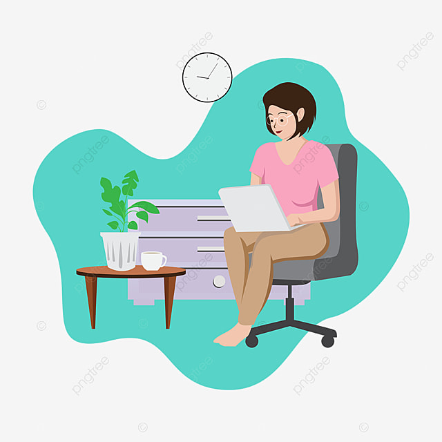

I build responsive and user-friendly websites using HTML, CSS and JavaScript.
Contact Me
Learn more about my skills and experience
Hello! I'm Maryam, an aspiring Frontend Developer and IT student. I have completed ADP-IT from the University of Sialkot and am currently pursuing BS Information Technology from Virtual University. I enjoy creating responsive and user-friendly websites using HTML, CSS and JavaScript and continuously improving my skills.
Currently pursuing BS-IT with a focus on Web Development, Programming, Database Systems.
Graduated from the University of Sialkot with a strong foundation in programming, web development, databases, and computer systems.
Completed Intermediate in Computer Science with strong interest in technology and programming.
Technologies: HTML, CSS, JavaScript
Technologies: HTML, CSS, JavaScript
Technologies: HTML, CSS, JavaScript